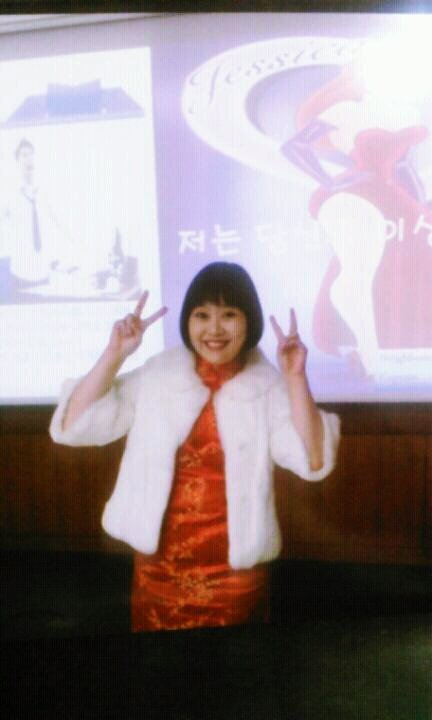

경력 및 자격
- 공군장교 20년
- 중국어/영어 번역가 22년
- 브런치 작가, 웹소설 작가 (등단 후 휴재 중)
- 행정사, 외국어번역행정사(중국어/영어) 자격증 보유 (활동 안함)
- 한식/양식/중식 조리기능사 보유 (내년쯤 유튜버 데뷔 목적), 2026년 일식 취득 예정
호기심 많고, 열정 많고, 욕심 많은 김가경(Courtney)의 자기소개 페이지입니다.


AI는 Chat GPT가 전부인 줄만 알고 살았다가, 폴리텍대학 정수 캠퍼스에서 AI 웹 작가 과정/영상콘텐츠 제작과정 수업을 듣고, 그 다음 단계인 코딩이 배우고 싶어졌습니다.
(그것이 단계별로 AI를 마스터하는 과정이라 어디서 주워 듣고...)
본 과정을 마치고 난 후, 나의 삶 전반에 걸쳐 내가 이루고자 하는 바를 이루는 데 AI가 날개를 달았으면 좋겠습니다.